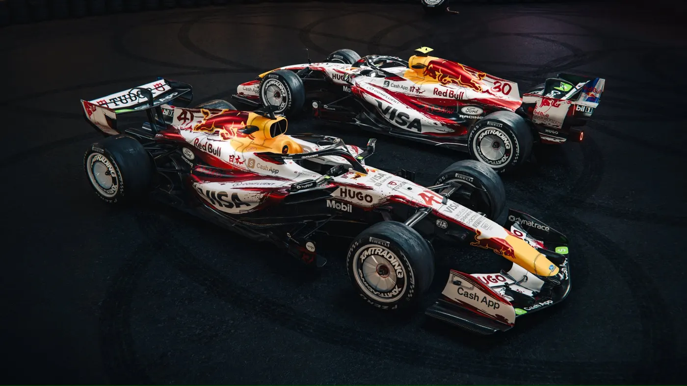
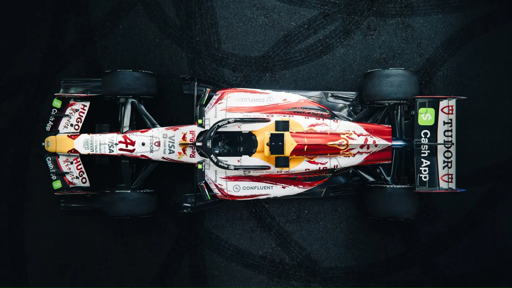
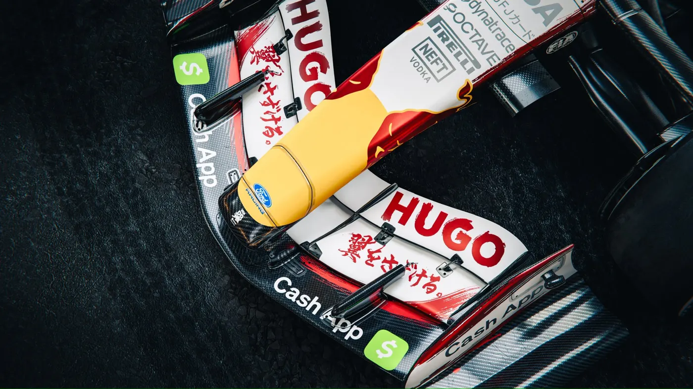
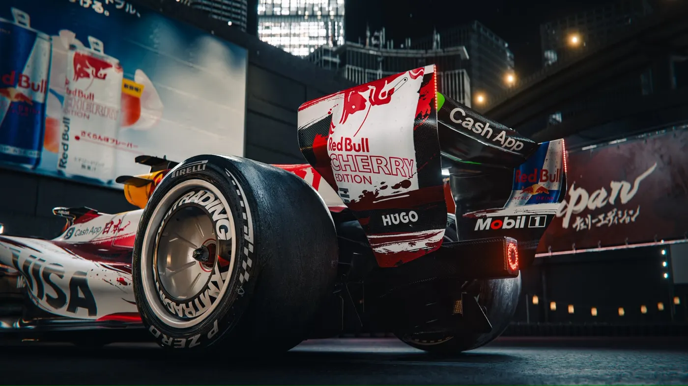

"Cherry-picked just for you." That's how Visa Cash App Racing Bulls F1 Team introduced their special Spring Edition livery for the Japanese Grand Prix 2026. The new design, featuring cherry blossom pink accents throughout the RB22, pays tribute to Japan's sakura season as Formula 1 heads to Suzuka Circuit.
Source: @visacashapprb | Images courtesy of Visa Cash App Racing Bulls F1 Team




The VCARB Spring Edition livery features cherry blossom pink accents throughout the car's design
The Announcement
Visa Cash App Racing Bulls F1 Team officially revealed the Spring Edition livery on March 21, 2026, just days before the Japanese Grand Prix weekend. The announcement comes as the team heads to Suzuka Circuit, one of Formula 1's most beloved venues, known for its passionate fans and iconic figure-eight layout.
The timing is significant. The Japanese Grand Prix often coincides with hanami—the Japanese tradition of cherry blossom viewing. VCARB's livery directly references this cultural phenomenon, integrating pink accents that evoke sakura petals across the car's bodywork.
This isn't the first time teams have created special liveries for specific races, but VCARB's approach stands out for its cultural sensitivity and visual appeal. The team worked to balance the spring theme with their existing blue, white, and red identity, plus title sponsors Visa and Cash App branding.
The Spring Edition Design
The Spring Edition livery builds on VCARB's base color scheme while adding distinctive pink elements. The cherry blossom accents appear on the nose cone, front wing, sidepods, engine cover, and rear wing—creating visual continuity across the entire car.
Special graphics depicting cherry blossom petals cascade across the bodywork, particularly visible on the sidepods and engine cover. The design team positioned these elements to maintain visibility from multiple viewing angles, including TV cameras and spectator perspectives.
The pink color choice directly references sakura blossoms, which hold deep cultural significance in Japan. The brief blooming period of cherry blossoms symbolizes the transient nature of life—a concept known as mono no aware in Japanese philosophy.
VCARB's 2026 Season
Visa Cash App Racing Bulls enters the 2026 season continuing to establish its identity following the rebrand from AlphaTauri. The team operates as Red Bull Racing's sister team but has carved out its own commercial and presentation identity, with Visa and Cash App as title sponsors.
The driver lineup for 2026 features Liam Lawson and Arvid Lindblad. The young Swedish driver brings fresh energy to the team as they compete in the midfield battle.
On track, the team has shown competitiveness in the midfield battle. Special liveries like the Spring Edition serve both marketing and engagement purposes—creating talking points and building fan connection beyond pure sporting results.
Suzuka Circuit and Japanese Grand Prix
Suzuka Circuit has hosted the Japanese Grand Prix since 1987, with only brief interruptions. The figure-eight layout, featuring the legendary 130R corner and the challenging Degner curves, demands excellence from both drivers and engineers. Many championship battles have been decided at this circuit.
Japanese Formula 1 fans are among the most passionate on the calendar. The grandstands fill with enthusiastic supporters dressed in team colors, waving flags throughout the weekend. This energy makes Suzuka a favorite for drivers and teams alike.
VCARB's decision to create a special livery acknowledges this unique atmosphere. Japanese fans have historically appreciated when teams embrace local culture, and the Spring Edition design directly responds to this sentiment.
Fan Reaction
The announcement generated immediate buzz across social media platforms. The original tweet accumulated thousands of likes and retweets within hours, with fans praising both the visual design and cultural respect shown by the team.
Japanese fans responded particularly positively, with many expressing excitement to see the livery in person at Suzuka. The cherry blossom theme resonated with local supporters who appreciated the authentic cultural reference rather than a generic Japanese motif.
Formula 1 enthusiasts have noted that special liveries add visual variety to the sport. With current regulations creating similarities between car designs, these creative differences help teams stand out both on track and in digital content.
Japanese Grand Prix Weekend
The 2026 Japanese Grand Prix promises to be a highlight of the Formula 1 season. VCARB's Spring Edition livery will be on display throughout practice sessions, qualifying, and the race—giving photographers and broadcasters ample opportunity to capture the car in its special colors.
Suzuka's weather can be unpredictable, with rain always a possibility. The pink accents could create striking visuals against grey skies or wet conditions, potentially producing some of the season's most memorable imagery.
Beyond aesthetics, VCARB will be focused on performance. Suzuka rewards high-speed stability through 130R, mechanical grip through the Esses, and driver confidence through the Degner curves—all critical areas for the RB22 package.